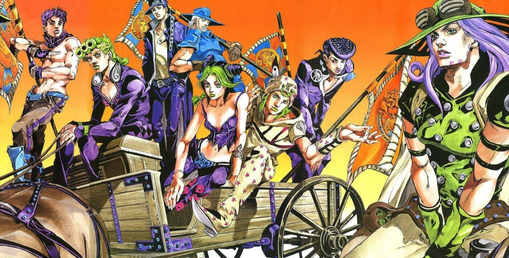
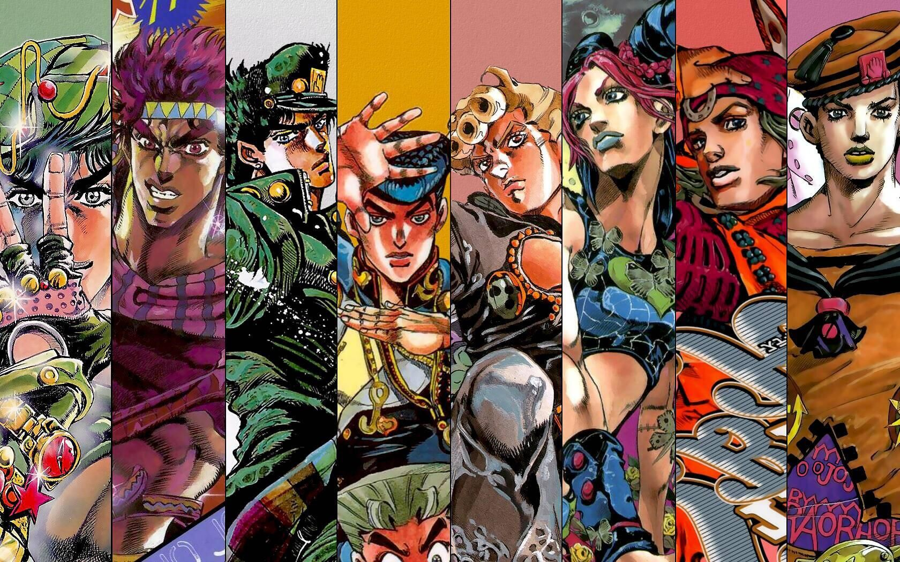

- 
-

- 
-

登场于第一部《幻影之血》、第二部《战斗潮流》（在史比特瓦根的回忆中出现） 第三部《星尘斗士》、第四部《不灭钻石》（回忆中出现） 第五部《黄金之风》（仅仅是乔鲁诺照片中的背影）、第六部《石之海》（回忆中出现） 第七部平行世界的DIO作为主角团的竞争对手出现 迪奥是系列主人公乔斯达一族的宿敌,是整个系列的核心人物之一 他邪恶而强大，善于掌控人心，残忍无情 却具备让全世界的恶人都拜服的魅力 被称作“恶之帝王”,“邪恶的化身”,“恶人的救世主”
热情组织的老板 “箭”的发现者 双重人格者 常态为隐藏自身的托比欧 而实际的主人格则是迪亚波罗 托比欧不过是他为了隐藏身份而出现的另一人格 替身名为绯红之王——King Crimson 同时延伸出了有能够预知未来的能力碑文
普奇神父是乔斯达家族的宿敌——迪奥·布兰度的挚友 迪奥曾追求名为“天堂”的存在 在迪奥被远征埃及的星尘十字军杀死后 普奇神父继承了他的理想 致力于实现迪奥所描绘过的“天堂” 为了得到到达天堂的方法 他设计陷害了空条徐伦 使其被判刑进入绿海豚街监狱 以此为诱饵迫使空条承太郎现身并夺取其记忆 引发了《石之海》的故事
美国的第23代总统 经历恶魔掌心地带后 获得替身能力 为了国家的繁荣而不择手段 当全部圣人遗体集齐后 瓦伦泰获得了遗体的承认 替身——D4C因此进化 之后D4C在次元之壁内时能将攻击或是“不幸”传送到世界上的任意角落并由他人承受 而总统不会受到影响 但是附加“重力”的力量可以穿透次元之壁（如骑兵回转）从而让瓦伦泰受到伤害